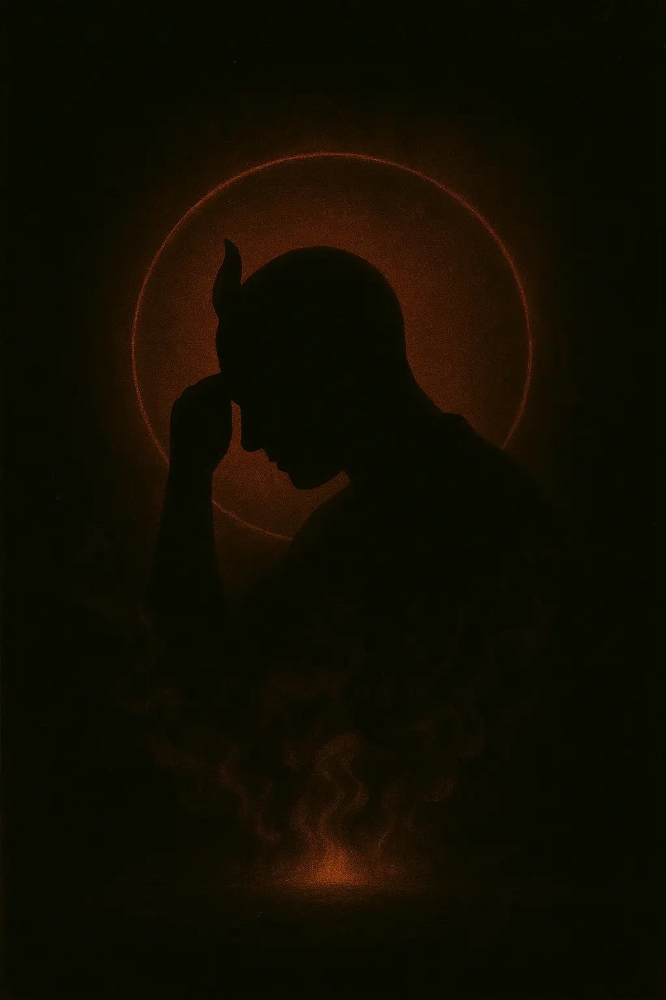
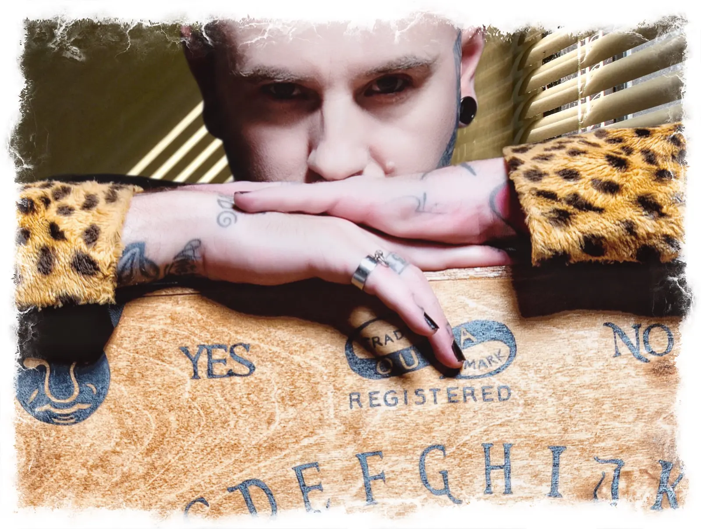
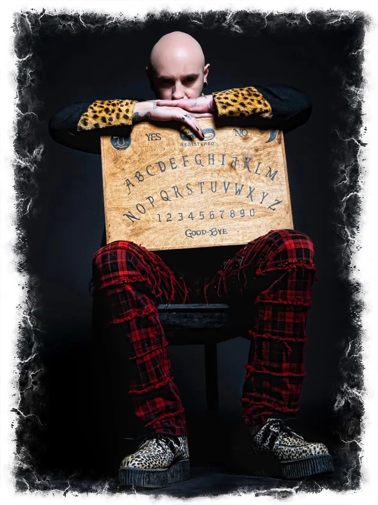
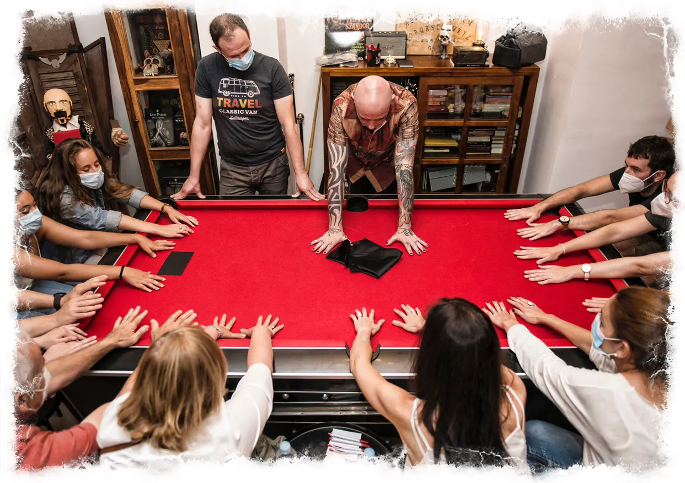
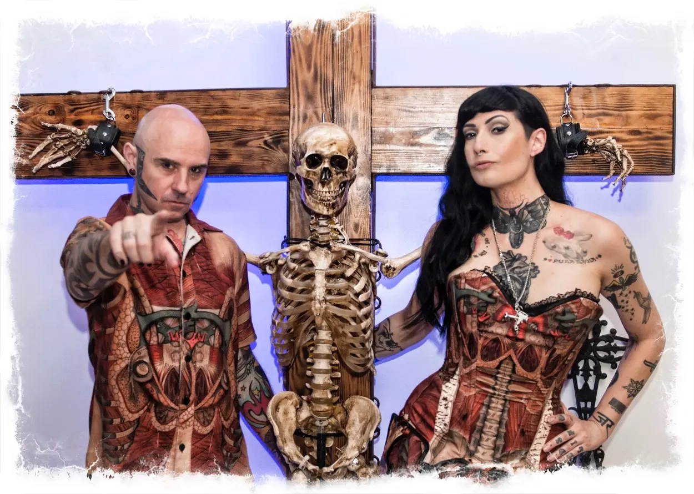
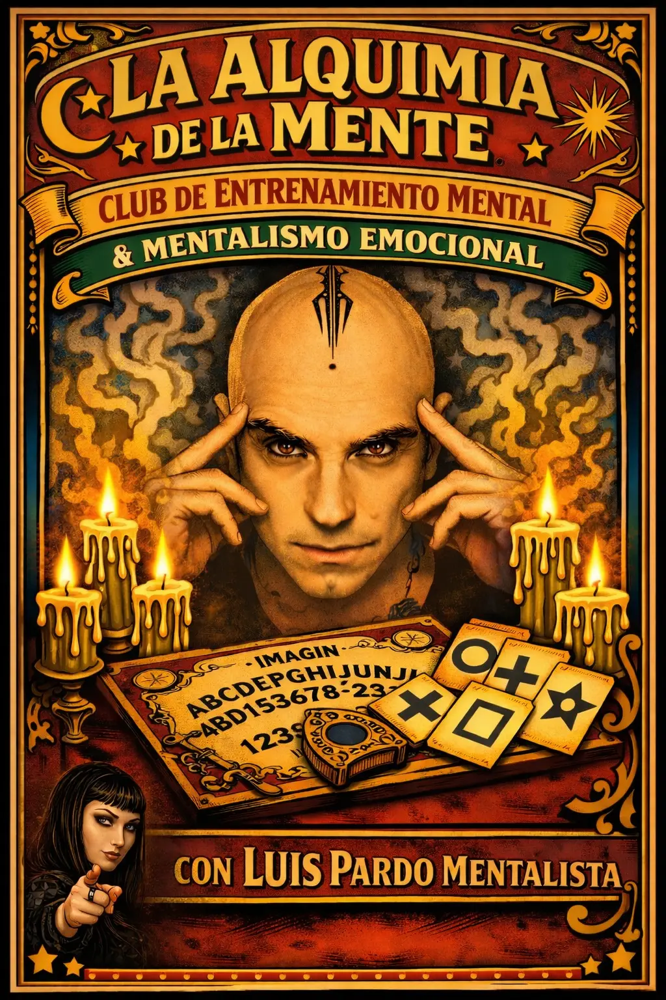
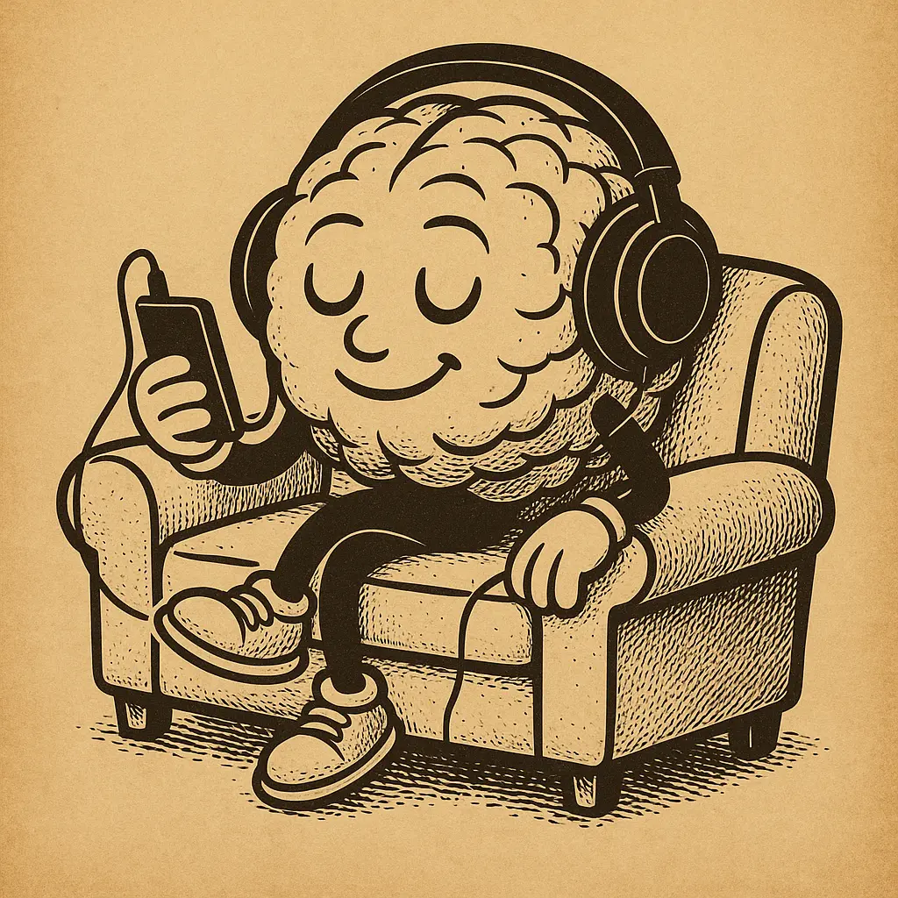

I
Cuando el Diablo Piensa
Mentalismo, telepatía y espiritismo en un formato íntimo que hace tambalear a los más escépticos.

No podrás creer lo que veas…
pero lo creerás, porque lo vas a vivir.
Experiencias de telepatía a dos palmos de distancia, con uno de los 5 mejores mentalistas del mundo.
La experiencia de mentalismo más exclusiva e inmersiva de todos los tiempos. Aquí no hay público: hay testigos.

Estamos tan seguros de que vas a salir sorprendido que, si no es así, te devolvemos el dinero de tus entradas.
Cada experiencia está diseñada para que no la mires desde fuera: la vives.
Mentalismo, telepatía y espiritismo en un formato íntimo que hace tambalear a los más escépticos.

Una ruta por lugares misteriosos guiada por M. Minerva, un show de mentalismo y un cóctel de autor.

Sesiones espiritistas personalizadas con Luis Pardo y un cóctel a elegir en Spirit Club Bcn.

Contacta con quien ya no está. Si no logramos conexión, no pagas nada.

Una pareja de viaje unida por todo lo oculto, lo inexplicable y lo paranormal.
Más de 30 años sobre el escenario. Capaz de adentrarse en tu mente con una mirada y de hablarte de tu pasado, tu presente y tu futuro.
Apasionada de lo prohibido y las emociones fuertes. Si los espíritus existen, ella sabe cómo hacerlos hablar.
Aquí mismo, a través de la pantalla. Solo necesito tu concentración.
Seis cartas boca abajo. Cuando estés preparado, dales la vuelta.
Todo grabado en las calles de Barcelona, con personas reales y sin edición. Así reacciona la gente cuando Luis Pardo se cruza en su camino.


Luis Pardo batió el récord mundial de conducción a ciegas recorriendo las calles de la ciudad sobre su Harley Davidson, sin cortar el tráfico.

«Me gusta Luis Pardo porque ha creado una nueva categoría de la magia.»
«Luis Pardo tiene el mejor espectáculo de mentalismo de todo el mundo, y además su estilo es único.»
«Vi a David Copperfield en Las Vegas, y Luis Pardo me ha gustado más: me ha hecho sentir la magia en mí mismo.»
«Nunca he visto nada igual. Te pone los pelos de punta; es realmente fascinante todo lo que hace.»
«Luis Pardo está muy loco, hace cosas completamente imposibles.»
«Me ha hecho vivir una de las experiencias más emocionantes de mi vida.»
«Cada vez que lo veo me rompe los esquemas. Nunca deja de sorprenderme.»
«Luis Pardo te demuestra que la magia existe.»
Más de 800 opiniones con una nota de 9,9 en Atrápalo. Algunas de las últimas:
Mágico y espectacular. Tres horas que se hacen cortas. Cercanos, simpáticos y sin duda impactantes. ¡Repetiré!
Llevan el mentalismo y las energías por un camino muy original y magnético. Te marchas con ganas de saber más.
Es mi segunda experiencia con ellos y aún no sé cómo nombrarla. Recomiendo vivirlo al 100%.


Un antiguo anticuario de Barcelona convertido en la única coctelería-teatro dedicada al mentalismo y al espiritismo de Europa.
Está diseñado para que el público no sea público: cada asistente es imprescindible en cada acto. Telepatía, precognición, telekinesis y espiritismo… con un cóctel en la mano.
Las herramientas del mentalismo y la hipnosis clínica, al servicio de tu día a día.

Comunicación no verbal, persuasión, hipnosis, memoria y energía: el Mentalismo Emocional paso a paso.

Un audio hecho solo para ti: ansiedad, sueño, autoestima, fobias, adelgazar… Prueba una muestra gratis.
Por qué la fuerza de voluntad no basta y cómo ayudar a tu mente a soltar el tabaco. Dossier gratuito.
El 24 de agosto de 2025, ChatGPT dejó de hablar de «lo que había aprendido» para hablar de «lo que había vivido». Así nació el Mentalismo Emocional aplicado a la IA.
Descubre a Luna Banda sonora original21 canciones para que el espectáculo vuelva a empezar en tu cabeza cada vez que las escuches. Disco completo y videoclip.
EscucharReservar una entrada es adquirir la llave de una experiencia que no te deja indiferente. Las plazas son muy limitadas y se agotan rápido.